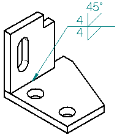
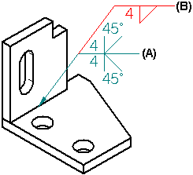
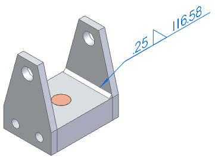

Weld Symbol command
The Weld Symbol command places a standard weld symbol on an element. You can set options for controlling the type of weld symbol you want to place.

In a drawing or sketch, you can create compound weld symbols by attaching a new weld symbol to an existing weld symbol. Define the symbol characteristics for the new weld symbol, then select the existing weld symbol (A) as the element to which you want to attach the new symbol (B).

You can specify whether weld symbols conform to the ANSI/ISO/DIN standard or the GOST standard using the Drawing Standards page of the Solid Edge Options dialog box.
Extracting weld symbol information from an assembly
In the Draft environment, you can also use this command to extract weld symbol information created in an assembly document onto the drawing. For example, you can define fillet welds, groove welds, and weld labels in an assembly document.
When you set the Tie to Geometry option  on the command bar, you can select drawing view edges which have weld attribute information
attached to them in the assembly, and the weld attribute information is used to create
the weld symbol on the drawing. If the weldment feature in the assembly has compound
weld symbol attributes defined, a compound weld symbol is placed on the drawing. If
the weldment feature in the assembly is a fillet weld, the bead length displays on
the weld symbol.
on the command bar, you can select drawing view edges which have weld attribute information
attached to them in the assembly, and the weld attribute information is used to create
the weld symbol on the drawing. If the weldment feature in the assembly has compound
weld symbol attributes defined, a compound weld symbol is placed on the drawing. If
the weldment feature in the assembly is a fillet weld, the bead length displays on
the weld symbol.

For more information, see the Weldments help topic.